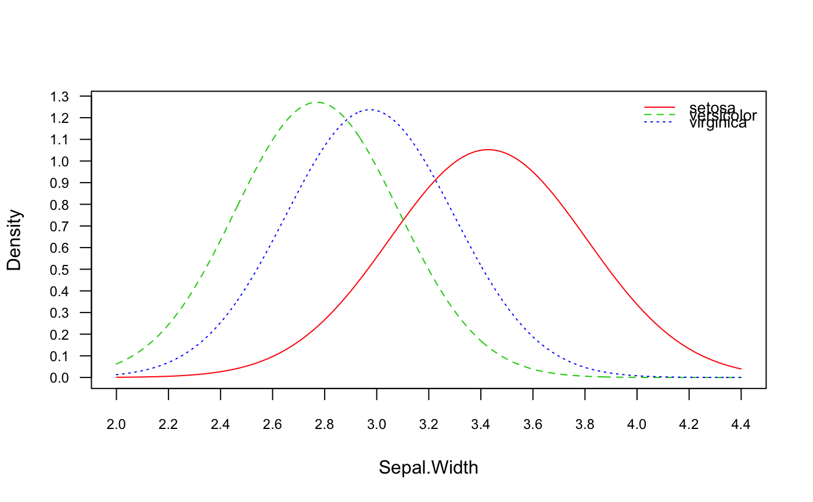

gaussian_naive_bayes.Rdgaussian_naive_bayes is used to fit the Gaussian Naive Bayes model in which all class conditional distributions are assumed to be Gaussian and be independent.
gaussian_naive_bayes(x, y, prior = NULL, ...)
| x | matrix with metric predictors (only numeric matrix accepted). |
|---|---|
| y | class vector (character/factor/logical). |
| prior | vector with prior probabilities of the classes. If unspecified, the class proportions for the training set are used. If present, the probabilities should be specified in the order of the factor levels. |
| ... | not used. |
gaussian_naive_bayes returns an object of class "gaussian_naive_bayes" which is a list with following components:
list with two components: x (matrix with predictors) and y (class variable).
character vector with values of the class variable.
list with two matrices, first containing the class conditional means and the second containing the class conditional standard deviations.
numeric vector with prior probabilities.
the call that produced this object.
This is a specialized version of the Naive Bayes classifier, in which all features take on real values (numeric/integer) and class conditional probabilities are modelled with the Gaussian distribution.
The Gaussian Naive Bayes is available in both, naive_bayes and gaussian_naive_bayes. The implementation of the specialized Naive Bayes provides more efficient performance though. The speedup comes from the restricting the data input to a numeric matrix and performing the linear algebra as well vectorized operations on it. In other words, the efficiency comes at cost of the flexibility.
The gaussian_naive_bayes function is equivalent to the naive_bayes function when the numeric matrix or a data.frame contains only numeric variables.
The missing values (NAs) are omitted during the parameter estimation. The NAs in the newdata in predict.gaussian_naive_bayes are not included into the calculation of posterior probabilities; and if present an informative warning is given.
naive_bayes, predict.gaussian_naive_bayes, plot.gaussian_naive_bayes, tables, get_cond_dist, %class%
data(iris) y <- iris[[5]] M <- as.matrix(iris[-5]) ### Train the Gaussian Naive Bayes gnb <- gaussian_naive_bayes(x = M, y = y) summary(gnb)#> #> ============================== Gaussian Naive Bayes ============================== #> #> - Call: gaussian_naive_bayes(x = M, y = y) #> - Samples: 150 #> - Features: 4 #> - Prior probabilities: #> - setosa: 0.3333 #> - versicolor: 0.3333 #> - virginica: 0.3333 #> #> ----------------------------------------------------------------------------------#> setosa versicolor virginica #> [1,] 1 2.981309e-18 2.152373e-25 #> [2,] 1 3.169312e-17 6.938030e-25 #> [3,] 1 2.367113e-18 7.240956e-26 #> [4,] 1 3.069606e-17 8.690636e-25 #> [5,] 1 1.017337e-18 8.885794e-26 #> [6,] 1 2.717732e-14 4.344285e-21### Equivalent calculation with general naive_bayes function. nb <- naive_bayes(M, y) head(predict(nb, type = "prob"))#> setosa versicolor virginica #> [1,] 1 2.981309e-18 2.152373e-25 #> [2,] 1 3.169312e-17 6.938030e-25 #> [3,] 1 2.367113e-18 7.240956e-26 #> [4,] 1 3.069606e-17 8.690636e-25 #> [5,] 1 1.017337e-18 8.885794e-26 #> [6,] 1 2.717732e-14 4.344285e-21#> #> --------------------------------------------------------------------------------- #> ::: Sepal.Length (Gaussian) #> --------------------------------------------------------------------------------- #> setosa versicolor virginica #> mu 5.0060000 5.9360000 6.5880000 #> sd 0.3524897 0.5161711 0.6358796 #> #> ---------------------------------------------------------------------------------#> setosa:mu versicolor:mu virginica:mu #> Sepal.Length 5.006 5.936 6.588 #> Sepal.Width 3.428 2.770 2.974 #> Petal.Length 1.462 4.260 5.552 #> Petal.Width 0.246 1.326 2.026# Check the equivalence of the class conditional distributions all(get_cond_dist(gnb) == get_cond_dist(nb))#> [1] TRUE